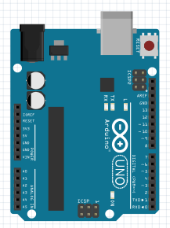
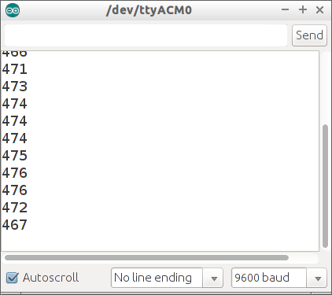
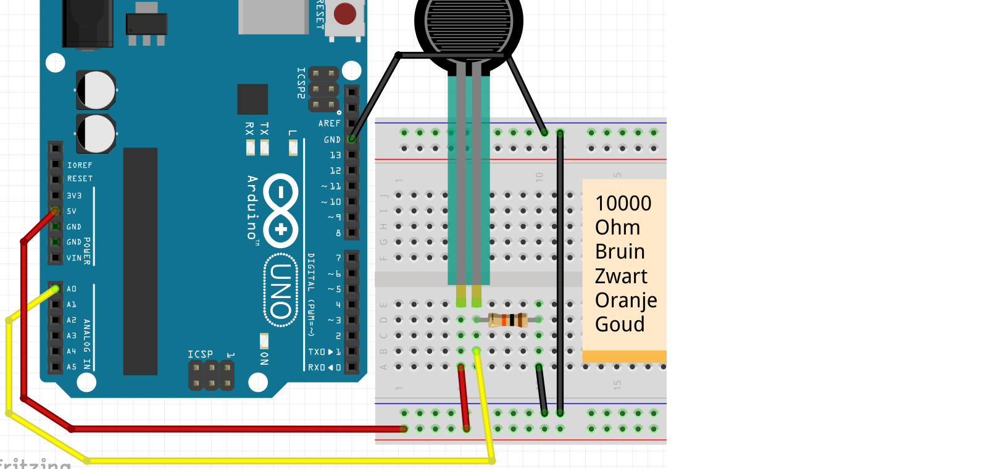
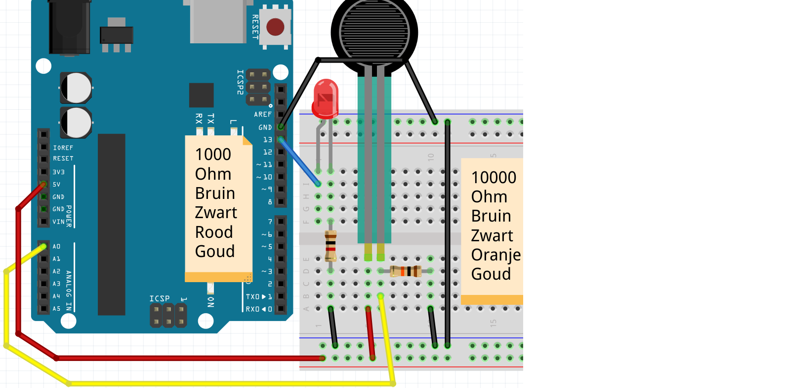
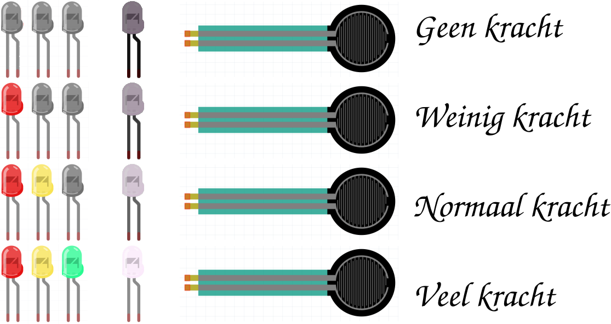

4. FSR¶
Seriele monitor¶
 |
Seriele monitor: de plek waar je de Arduino kunt laten praten via een seriele poort |
|---|---|
Met de seriele monitor kunnen we de Arduino laten praten. Of precies: dat deze tekst naar de seriele monitor stuurt. De seriele monitor laat deze tekst op je computer zien.
Alleen Arduino aansluiten¶
Eerst sluiten we alleen een Arduino aan:

Ik denk dat dit wel moet lukken :-)
|
De seriele monitor gaat via het USB snoer tussen Arduino naar computer |
|---|---|
Code: seriele monitor¶
 |
 |
|---|---|
Serial.begin(9600); |
'Lieve computer, laat de Arduino praten met 9600 bits per seconde' |
Serial.print("Hallo"); |
'Lieve computer, laat de Arduino het woord Hallo zeggen' |
Serial.println("Hallo"); |
'Lieve computer, laat de Arduino het woord Hallo zeggen en een nieuwe regel beginnen`' |
Opdrachten 1¶


- Upload het programma. In de Arduino IDE, klik rechtsboven op 'Seriele Monitor'. Wat zie je?
- Kun je de tekst veranderen naar 'Hallo Richel' (of je eigen naam?)
- Verander
Serial.printlnnaarSerial.print. Wat zie je? - Verander de tekst
Serial.begin(9600)naarSerial.begin(4800). Wat zie je? Waarom?
Antwoorden 1¶
- De seriele monitor laat elke second een extra regel zien, met de tekst 'Hallo'
- Verander de regel
Serial.println("Hallo");naarSerial.println("Hallo Richel"); - De woorden komen na elkaar, in plaats van onder elkaar
- Nu laat de seriele monitor onleesbare tekst zien. Dit komt omdat de Arduino langzamer tekst stuur naar je computer (4800), dan je computer de tekst leest (9600)
Aansluiten FSR zonder LED¶
|
FSR betekent 'Force Sensitive Resistance' |
|---|---|
Eerst sluiten we alleen een FSR aan:

 |
Is er geen FSR, gebruik dan een LDR |
|---|---|
Code: lezen FSR met seriele monitor¶
Met deze code meten we de waarde van de FSR:
void setup()
{
pinMode(A0, INPUT);
Serial.begin(9600);
}
void loop()
{
Serial.println(analogRead(A0));
delay(100);
}
|
|
|---|---|
Serial.println(analogRead(A0)) |
'Lieve computer, laat de waarde van pin A0 op de seriele monitor zien' |
Opdrachten 2¶
- Upload het programma. In de Arduino IDE, klik rechtsboven op 'Seriele Monitor'. Wat zie je?
- Druk de FSR in met je vingers (of, met een LDR: houd je vinger boven de LDR) terwijl je de seriele monitor bekijkt. Wat zie je?
- Verander
Serial.printlnnaarSerial.print. Wat zie je? - Verander de tekst
Serial.begin(9600)naarSerial.begin(4800). Wat zie je? Waarom? - Haal de draad naar
A0weg. Ja, haal de draad tussenA0en de LDR weg. Kijk op de seriele monitor. Wat zie je?
|
De weerstand tussen A0 en LDR een 'Pull Down' weerstand genoemd |
|---|---|
Oplossingen 2¶
- Je ziet een getal van nul tot 1024, afhankelijk van de waarde van de FSR
- Je zit de getallen veranderen
- Alle getallen komen na elkaar
- Nu laat de seriele monitor onleesbare tekst zien. Dit komt omdat de Arduino langzamer tekst stuur naar je computer (4800), dan je computer de tekst leest (9600)
- Nu zie je het getal willekeurig veranderen. Dit wordt een zwevende input genoemd
|
Een 'Pull Down' weerstand voorkomt een zwevende input |
|---|---|
Aansluiten FSR met LED, aan/uit¶
|
'Force Sensitive Resistance' betekent 'Kracht afhankelijke weerstand' |
|---|---|
Nu sluiten we ook een LED aan:

Reageren op FSR, aan/uit¶
Nu gaan we het LEDje laten reageren op de LED:
void setup()
{
pinMode(A0, INPUT);
pinMode(13, OUTPUT);
}
void loop()
{
if (analogRead(A0) < 512)
{
digitalWrite(13, HIGH);
}
else
{
digitalWrite(13, LOW);
}
delay(100);
}
|
|
|---|---|
if (analogRead(A0) < 512) {} |
'Lieve computer, als op A0 minder dan 2,5 Volt staat, doe dan datgeen tussen accolades' |
Opdrachten 3¶
- Wat gebeurt er als je
512hoger zet? Wat gebeurt er als je512lager zet? - Zorg dat de seriele monitor ook
A0meet en laat zien. Welk getal meet de FSR in rust? - Zorg dat de seriele monitor het woord
AANlaat zien als de LED aan gaat, en het woordUITals de LED uit wordt gezet
Oplossingen 3¶
- Als
512wordt veranderd naar een te hoog getal, is het lampje altijd aan, hoe hard/zacht je ook drukt. Als512wordt veranderd naar een te hoog getal, is het lampje altijd uit, hoe hard/zacht je ook drukt - Hiervoor gebruik je de code van de vorige opdracht: voeg in de
setupfunction toeSerial.begin(9600);, in deloopfunctie voeg jeSerial.println(analogRead(A0));toe. De waarde die je gaat zien is afhankelijk van de weerstand, FSR en situatie - Dit kan door
Serial.println("AAN");in het eerste gedeelte van hetifstatement te zetten. ZetSerial.println("UIT");in het tweede gedeelte van hetifstatement.
void setup()
{
pinMode(A0, INPUT);
pinMode(13, OUTPUT);
Serial.begin(9600);
}
void loop()
{
Serial.println(analogRead(A0));
if (analogRead(A0) < 512)
{
digitalWrite(13, HIGH);
Serial.println("AAN");
}
else
{
digitalWrite(13, LOW);
Serial.println("UIT");
}
delay(100);
}
Reageren op FSR, dimmen¶
Nu gaan we het LEDje laten reageren op de LED. Dit keer dimt het LEDje.
void setup()
{
pinMode(A0, INPUT);
pinMode( 9, OUTPUT);
Serial.begin(9600);
}
void loop()
{
const int fsr_waarde = analogRead(A0);
Serial.print("FSR: ");
Serial.println(fsr_waarde);
const int led_waarde = map(fsr_waarde, 0, 1023, 0, 255);
Serial.print("LED: ");
Serial.println(led_waarde);
analogWrite(led_waarde, 9);
delay(100);
}
|
|
|---|---|
analogWrite( 0, 9) |
'Lieve computer, zet pin 9 uit' |
analogWrite(128, 9) |
'Lieve computer, zet pin 9 halfvol aan' |
analogWrite(255, 9) |
'Lieve computer, zet pin 9 vol aan' |
map(analogRead(A0),0,1023,0,255) |
'Lieve computer, lees de spanning van A0. Dit is een waarde van 0 tot en met 1023. Bouw de gelezen waarde om tussen 0 en 255.'. |
Opdrachten 4¶
- Het LEDje zit op een andere pin. Kijk in de code en sluit de LED aan op de juiste pin
- Welke pinnen kunnen we gebruiken om een LEDje te dimmen?
Oplossingen 4¶
- Het LEDje moet nu op pin 9 aangesloten worden
- Alle pinnen met een golfje (
~) voor het getal. Dit zijn 3, 5, 6, 9, 10, 11.
Opdracht 5¶
Sluit twee LEDjes aan op pinnen 12 en 13. Als de FSR in rust is, moet er geen LEDje branden. Als je de FSR zacht indrukt, gaat er een LEDje branden. Als je de FSR hard indrukt twee.
|
Tip: gebruik twee if statements |
|---|---|
Oplossing 5¶
De getallen in de if statement moeten goed ingesteld worden.
void setup()
{
pinMode(A0, INPUT);
pinMode(12, OUTPUT);
pinMode(13, OUTPUT);
Serial.begin(9600);
}
void loop()
{
Serial.println(analogRead(A0));
if (analogRead(A0) < 256)
{
digitalWrite(13, HIGH);
}
if (analogRead(A0) < 512)
{
digitalWrite(12, HIGH);
}
delay(100);
}
Opdracht 6¶
Je kunt een LEDje ook laten reageren op een FSR door deze te faden/dimmer
- Met welk commando deed je dat ook alweer?
- Kan dat met elke pin? Zo nee, met welke wel/niet?
- Wat is de hoogste waarde waarmee je een LEDje kunt laten branden?
- Wat is de hoogste waarde die de FSR kan meten?
- Stel je wil een LED laten branden afhankelijk van een FSR waarde. Hoe zou je dit kunnen doen?
- Hoe laat je code een deling doen?
- Laat de LED branden afhankelijk van de FSR waarde
Oplossingen 6¶
- Een LEDje kun je laten faden met
analogWrite, bijvoorbeeldanalogWrite(11, 255); - Je kunt een LEDje alleen laten dimmen met PWM pinnen. Dit zijn de pinnen met een golfje
(
~) naast hun getal. Op de Arduino Uno zijn dit de pinnen 3, 5, 6, 9, 10 en 11 - Met
analogWritekun je maximaal 255 geven, bijvoorbeeldanalogWrite(11, 255); - Met
analogReadkun je maximaal 1023 meten - Je leest een waarde, deelt deze door vier (1024 gedeeld door 256 is vier) en laat de LED zo hard branden
- Met de deelstreep,
/. - Zie hieronder. Vergeet niet een LEDje op pin 11 te zetten
void setup()
{
pinMode(A0, INPUT);
pinMode(11, OUTPUT);
Serial.begin(9600);
}
void loop()
{
analogWrite(11, analogRead(A0) / 4);
delay(100);
}
|
|
|---|---|
analogWrite(11, analogRead(A0) / 4) |
'Lieve computer, dim pin 11 op de waarde van pin A0 (dit moet je delen door vier)' |
Eindopdracht¶
- Sluit vier LEDjes aan: een witte, een rode, een gele en een groene
- Als de FSR in rust is, moet er geen LEDje branden.
- Als je de FSR zacht indrukt gaat het groene LEDje branden
- Als je de FSR harder indrukt gaan de groene en gele LEDjes branden
- Als je de FSR hard indrukt gaan de groene, gele en rode LEDjes branden
- Het witte LEDje gaat harder en zachter branden afhankelijk van de FSR
Als je geen wit LEDje hebt, gebruik dan een andere kleur.
